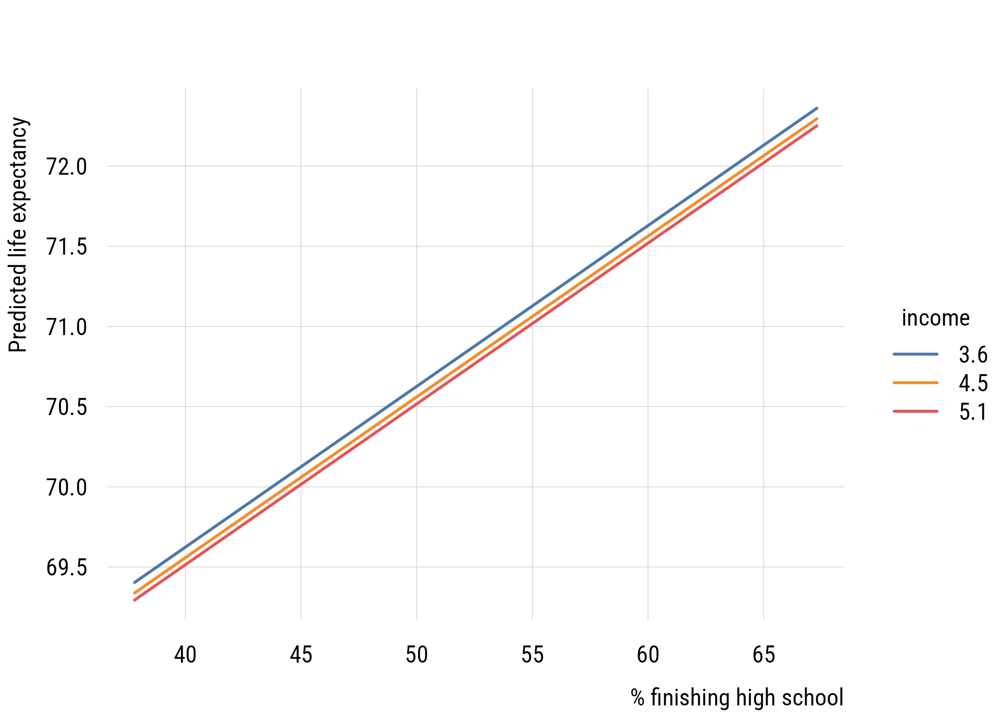
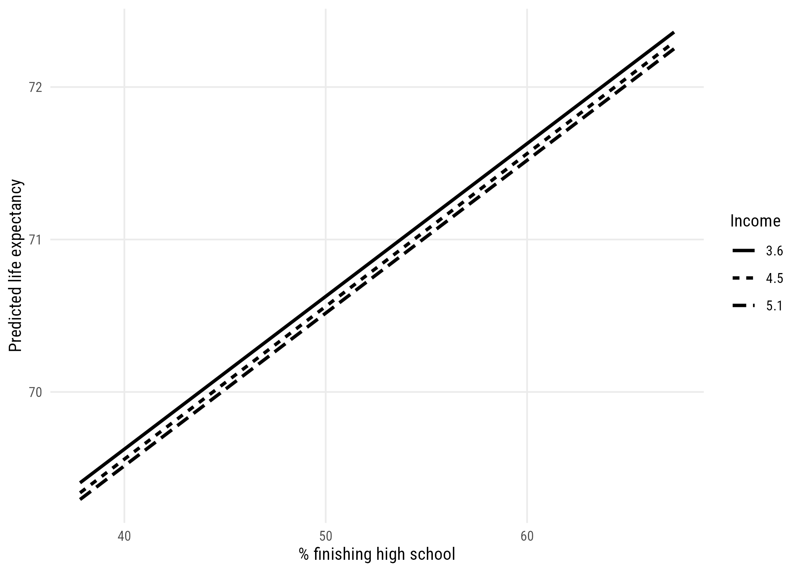
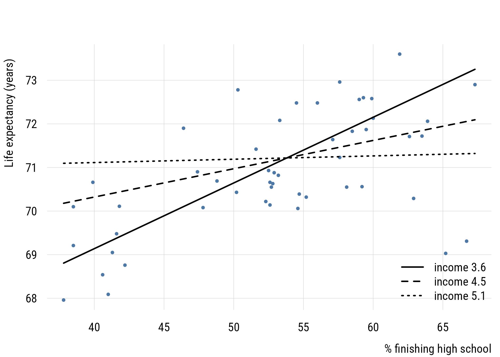
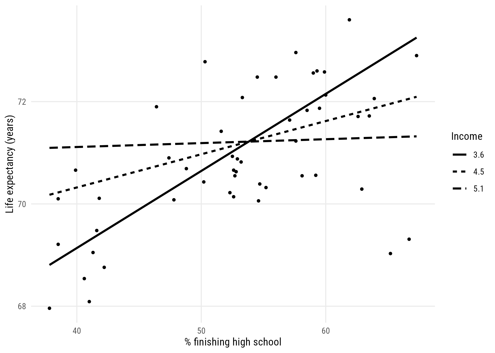
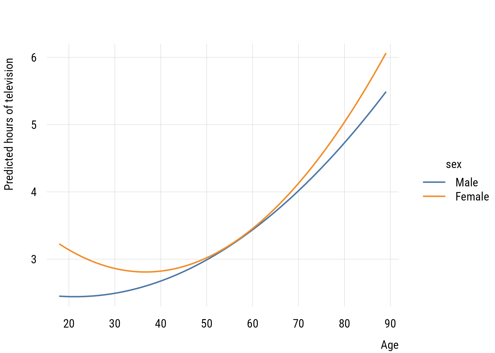
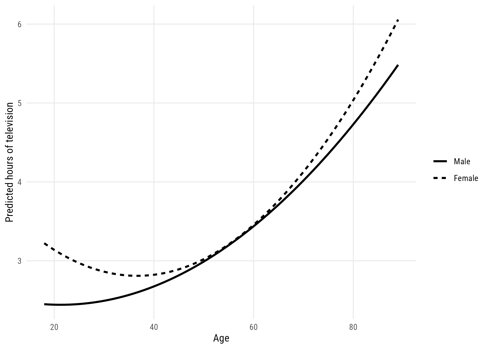

states <- as.data.frame(state.x77) |>
rename(life_exp = `Life Exp`, hs_grad = `HS Grad`) |>
mutate(inc1000 = Income / 1000,
state = rownames(as.data.frame(state.x77)))12 Interactions
We’re going to use a new variable, income, in addition to the ones we’ve been using so far. We will convert it into inc1000, or the per capita income in thousands of (1974) USD.
12.1 Simple and additive models
Let’s start with an additive model of life_exp as a function of hs_grad and inc1000:
\[\text{LIFEEXP}_i = \beta_0 + \beta_1(\text{HSGRAD}_i) + \beta_2(\text{INCOME}_i) + \varepsilon_i\]
Or we could write it as:
\[\begin{align} \text{LIFEEXP}_i &\sim \mathcal{N}(\mu_i, \sigma) \\ \mu_i &= \beta_0 + \beta_1(\text{HSGRAD}_i) + \beta_2(\text{INCOME}_i) \end{align}\]
No matter how we write it, we estimate it like this.
additive <- lm(life_exp ~ hs_grad + inc1000, data = states)
msummary(additive, gof_map = c("nobs", "r.squared"))| (1) | |
|---|---|
| (Intercept) | 65.881 |
| (1.235) | |
| hs_grad | 0.100 |
| (0.025) | |
| inc1000 | -0.073 |
| (0.330) | |
| Num.Obs. | 50 |
| R2 | 0.340 |
Interpret this table. Think about confidence intervals among other things.
12.1.1 Regression lines at representative values
Now let’s look at some predictions. We’ll set up a grid for the plot, do some predictions, then plot them. This is a pretty common plotting workflow.
hs_seq <- seq(min(states$hs_grad), max(states$hs_grad), length.out = 100)
income_levels <- quantile(states$inc1000, c(0.1, 0.5, 0.9))
add_grid <- expand.grid(hs_grad = hs_seq, inc1000 = income_levels)
add_grid$fit <- predict(additive, newdata = add_grid)
add_grid$income <- factor(round(add_grid$inc1000, 1))plt(fit ~ hs_grad | income, data = add_grid, type = "l", lwd = 2,
xlab = "% finishing high school", ylab = "Predicted life expectancy")
ggplot(add_grid, aes(x = hs_grad, y = fit, linetype = income)) +
geom_line(linewidth = 1) +
labs(x = "% finishing high school", y = "Predicted life expectancy",
linetype = "Income")
So we set the x-axis to hs_grad and the y-axis to predicted life_exp, showing different values of inc1000 using three different lines. Interpret this graph. How does it relate to the table above? Note that the lines are parallel, which is what “additive” means.
12.2 Interactions between predictors
These models so far have assumed that the effects of hs_grad and inc1000 are additive effects. That is, that the marginal effect of each on the outcome doesn’t depend on the value of the other variable. We can change that!
12.2.1 Estimation and interpretation of the interaction model
Here’s the interaction model:
\[\text{LIFEEXP}_i = \beta_0 + \beta_1(\text{HSGRAD}_i) + \beta_2(\text{INCOME}_i) + \beta_3(\text{HSGRAD}_i)(\text{INCOME}_i) + \varepsilon_i\]
The hs_grad * inc1000 notation is a shorthand for hs_grad + inc1000 + hs_grad:inc1000, where hs_grad:inc1000 means \((\text{HSGRAD}_i)(\text{INCOME}_i)\).
interactive <- lm(life_exp ~ hs_grad * inc1000, data = states)
msummary(interactive, gof_map = c("nobs", "r.squared"))| (1) | |
|---|---|
| (Intercept) | 44.446 |
| (6.022) | |
| hs_grad | 0.498 |
| (0.112) | |
| inc1000 | 5.151 |
| (1.473) | |
| hs_grad |
-0.096 |
| (0.026) | |
| Num.Obs. | 50 |
| R2 | 0.486 |
int_grid <- expand.grid(hs_grad = hs_seq, inc1000 = income_levels)
int_grid$fit <- predict(interactive, newdata = int_grid)
int_grid$income <- factor(round(int_grid$inc1000, 1))plt(life_exp ~ hs_grad, data = states, type = "p", pch = 19, cex = 0.6,
xlab = "% finishing high school", ylab = "Life expectancy (years)")
for (i in seq_along(income_levels)) {
lines(hs_seq, int_grid$fit[int_grid$inc1000 == income_levels[i]],
lwd = 2, lty = i)
}
legend("bottomright", legend = paste("income", round(income_levels, 1)),
lty = seq_along(income_levels), lwd = 2, bty = "n")
ggplot(states, aes(x = hs_grad, y = life_exp)) +
geom_point(size = 1) +
geom_line(data = int_grid, aes(y = fit, linetype = income), linewidth = 1) +
labs(x = "% finishing high school", y = "Life expectancy (years)",
linetype = "Income")
As you can see, the slope of hs_grad appears to depend very strongly on the value of inc1000!1
1 Looking at these graphs, the reason the interactions are helping might really be down to Alaska and Utah. We probably won’t talk too much about outliers in this chapter (there’s enough to do already) but I’d look a lot closer in this case. If you drop those two states, the interaction coefficient falls from -0.096 to -0.07 and its p-value goes from 0.00073 to 0.08.
12.2.2 Model comparisons
Let’s compare the additive (C or \(M_1\)) and interactive (A or \(M_2\)) models. First let’s look at the \(F\)-test comparison.
anova(additive, interactive)Analysis of Variance Table
Model 1: life_exp ~ hs_grad + inc1000
Model 2: life_exp ~ hs_grad * inc1000
Res.Df RSS Df Sum of Sq F Pr(>F)
1 47 58.306
2 46 45.375 1 12.931 13.109 0.0007296 ***
---
Signif. codes: 0 '***' 0.001 '**' 0.01 '*' 0.05 '.' 0.1 ' ' 1This is called an incremental \(F\) test. The null hypothesis is that adding the additional term (here, the interaction) does not improve model fit.
As discussed in Chapter 9, we can also use a test based on comparing the likelihoods. This is the likelihood ratio test (LRT). The reason I point this out here is because the LRT can be used for many kinds of models, not just linear regressions.
g2 <- 2 * (as.numeric(logLik(interactive)) - as.numeric(logLik(additive)))
c(G2 = g2, p_LRT = 1 - pchisq(g2, df = 1),
p_F = anova(additive, interactive)$`Pr(>F)`[2]) G2 p_LRT p_F
1.253735e+01 3.988980e-04 7.295974e-04 This test gives a smaller p-value because the tail of the \(\chi^2\) distribution is thinner than the tail of the \(F\) distribution with one numerator and 46 denominator degrees of freedom. These get more similar as the sample size goes up.
12.2.3 Tests of other parameters
Let’s look again at the output from Model 2. You get some null hypothesis tests here but it’s important to remember what they mean in the presence of interactions. Let’s start with the linear terms:
- the
hs_gradnull hypothesis is now “the slope ofhs_gradis 0 wheninc1000is 0” - the
inc1000null hypothesis is now “the slope ofinc1000is 0 whenhs_gradis 0”
When we have an interaction, the so-called “main effects” reflect the slope when its interaction partner is set to 0. If you think about it, the related null hypothesis tests are essentially meaningless since neither inc1000 nor hs_grad is ever 0. So you can’t talk about whether either of those coefficients is “statistically significant” on its own.
The interaction term coefficient reflects two things at once:
- how the
hs_gradslope changes wheninc1000goes up by 1 unit - how the
inc1000slope changes whenhs_gradgoes up by 1 unit
The null hypothesis here is that the slopes don’t change at different levels of the other variable. So that’s a meaningful null hypothesis test regardless of how the variables are coded.
12.2.4 Deviating or centering predictors
One way to make the linear terms more interpretable is to make sure that the variables all have meaningful zero values. We can do that several different ways, for example normalization (where zero means “minimum”) or standardization (where zero means “the mean”). Perhaps the most straightforward way to do this is to center the variables at their means. This way the units are the same (e.g., percentage points, thousands of dollars) but 0 is now the mean.
states <- states |>
mutate(hs_c = hs_grad - mean(hs_grad),
inc_c = inc1000 - mean(inc1000))
centered <- lm(life_exp ~ hs_c * inc_c, data = states)
msummary(centered, gof_map = c("nobs", "r.squared"))| (1) | |
|---|---|
| (Intercept) | 71.167 |
| (0.162) | |
| hs_c | 0.073 |
| (0.024) | |
| inc_c | 0.067 |
| (0.297) | |
| hs_c |
-0.096 |
| (0.026) | |
| Num.Obs. | 50 |
| R2 | 0.486 |
Now, for example, the hs_c coefficient means “the predicted difference in life_exp when hs_grad goes up a point and inc1000 is at its mean.”
Note what did and didn’t change. \(R^2\) is identical, and so is the interaction coefficient. Only the linear terms moved, and the interaction’s p-value is untouched:
c(uncentred = coef(summary(interactive))["hs_grad:inc1000", "Pr(>|t|)"],
centred = coef(summary(centered))["hs_c:inc_c", "Pr(>|t|)"]) uncentred centred
0.0007295974 0.0007295974 12.3 A general procedure for the derivation of “simple” slopes
The slope of one predictor depends on its own value as well as the value of any variables it’s interacted with. For our model, the slope of hs_grad at a given income is:
\[b_1 + b_3 \times \text{income}\]
b <- coef(interactive)
data.frame(
income = round(income_levels, 2),
hs_grad_slope = round(b["hs_grad"] + b["hs_grad:inc1000"] * income_levels, 4)
) income hs_grad_slope
10% 3.62 0.1507
50% 4.52 0.0649
90% 5.12 0.0076Sometimes you want a single summary instead: the slope averaged over the sample as it actually is.
avg_slopes(interactive, variables = "hs_grad")
Estimate Std. Error z Pr(>|z|) S 2.5 % 97.5 %
0.0729 0.0236 3.08 0.00204 8.9 0.0266 0.119
Term: hs_grad
Type: response
Comparison: dY/dXThat average marginal effect is the same number as the simple slope at the mean of the other predictor, and the same as the centered model’s main effect (three descriptions of one quantity).
c(avg_slope = as.data.frame(avg_slopes(interactive, variables = "hs_grad"))$estimate,
slope_at_mean = unname(b["hs_grad"] + b["hs_grad:inc1000"] * mean(states$inc1000)),
centred_main_effect = unname(coef(centered)[2])) avg_slope slope_at_mean centred_main_effect
0.07288519 0.07288519 0.07288519 12.4 Powers of predictor variables
Adding a polynomial term essentially means allowing a variable to interact with itself. So everything above applies, including this rule:
ImportantNo interaction without a plot
An interaction cannot be read off its coefficient. Neither can a polynomial, because even a polynomial is an interaction. If you fit one, plot it.
Consider how television watching varies with age, and whether it varies differently for men and women.
tv_age <- readRDS(here::here("data", "gss2024.rds")) |>
haven::zap_labels() |>
select(tvhours, sex, age) |>
tidyr::drop_na()
degrees <- 1:5
data.frame(
degree = degrees,
parameters = map_int(degrees, \(k)
length(coef(lm(tvhours ~ poly(age, k) * factor(sex), data = tv_age)))),
R2 = map_dbl(degrees, \(k)
round(summary(lm(tvhours ~ poly(age, k) * factor(sex), data = tv_age))$r.squared, 4)),
AIC = map_dbl(degrees, \(k)
round(AIC(lm(tvhours ~ poly(age, k) * factor(sex), data = tv_age)), 1)),
BIC = map_dbl(degrees, \(k)
round(BIC(lm(tvhours ~ poly(age, k) * factor(sex), data = tv_age)), 1))
) degree parameters R2 AIC BIC
1 1 4 0.0395 10865.0 10893.2
2 2 6 0.0482 10850.0 10889.5
3 3 8 0.0506 10848.6 10899.4
4 4 10 0.0516 10850.5 10912.6
5 5 12 0.0578 10840.8 10914.2\(R^2\) climbs with every degree, as it must. AIC prefers the fifth-degree curve, BIC the second. This is the same disagreement as in Chapter 10, and for the same reason. When they disagree and the simpler model is defensible, take the simpler model.
quad <- lm(tvhours ~ poly(age, 2) * factor(sex), data = tv_age)
pred_age <- predictions(quad, newdata = datagrid(age = 18:89, sex = c(1, 2))) |>
as.data.frame() |>
mutate(sex = factor(sex, levels = c(1, 2), labels = c("Male", "Female")))plt(estimate ~ age | sex, data = pred_age, type = "l", lwd = 2,
xlab = "Age", ylab = "Predicted hours of television")
ggplot(pred_age, aes(x = age, y = estimate, linetype = sex)) +
geom_line(linewidth = 1) +
labs(x = "Age", y = "Predicted hours of television", linetype = "")
12.5 Power considerations
You can skim this section. Interesting but not essential.
Interaction tests fail to reach significance far more often than main effect tests, and there’s a widespread rule of thumb that detecting an interaction needs about four times the sample size. The rule is roughly right, but the usual explanation is wrong. There’s nothing intrinsically weak about an interaction test; at equal effect sizes its power is about the same as any other coefficient’s. Interaction effects are typically smaller than the main effects they modify.
set.seed(522)
one_study <- function(n) {
d <- tibble(
x1 = rnorm(n),
x2 = rnorm(n)
) |>
mutate(y = 0.3 * x1 + 0.3 * x2 + 0.15 * x1 * x2 + rnorm(n))
p <- coef(summary(lm(y ~ x1 * x2, data = d)))[, 4]
tibble(
main = p["x1"] < 0.05,
interaction = p["x1:x2"] < 0.05
)
}
expand_grid(
sid = 1:800,
n = c(100, 200, 400, 800)
) |>
rowwise() |>
mutate(out = list(one_study(n))) |>
unnest_wider(out) |>
group_by(n) |>
summarize(across(c(main, interaction), \(z) round(mean(z), 3)),
.groups = "drop")# A tibble: 4 x 3
n main interaction
<dbl> <dbl> <dbl>
1 100 0.805 0.306
2 200 0.989 0.539
3 400 1 0.839
4 800 1 0.988Halving an effect quadruples the sample needed to find it, which is the square-root relationship from Chapter 2 read the other way round.
12.6 Recap
- an additive model assumes each predictor’s slope is the same at every value of the other, so its lines are parallel
- an interaction adds the product of two predictors, and
*is shorthand for both terms plus their product - in an interaction model the “main effects” are the slope when the partner is 0, so their null hypothesis tests are essentially meaningless unless zero means something
- centering fixes that
- the interaction’s own test is meaningful regardless of coding
- the incremental F test compares additive against interactive, and the LRT does the same job for other kinds of models
- a polynomial is a variable interacting with itself
- no interaction without a plot
- interactions are hard to detect mainly because they’re small